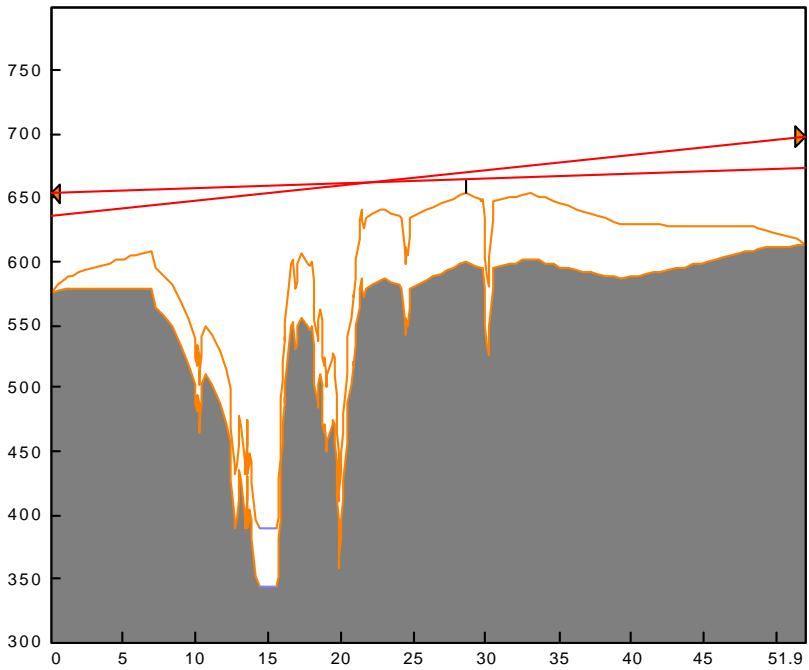
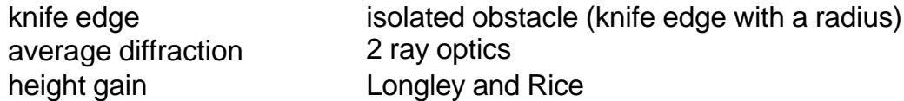
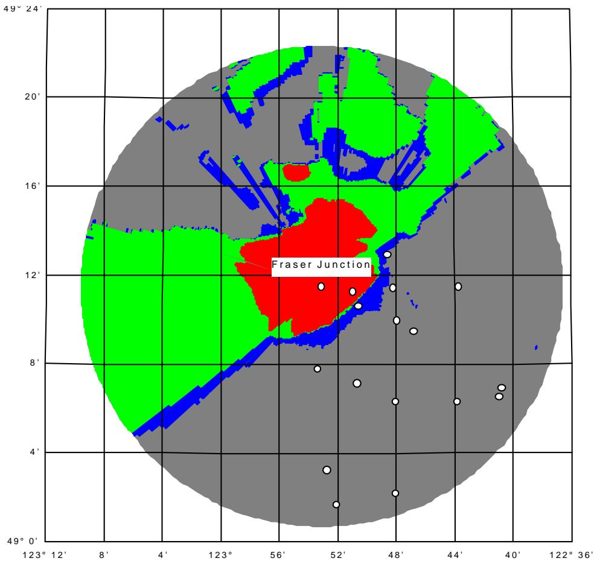

#22 textChương trình Pathloss là một công cụ thiết kế đường truyền toàn diện cho các liên kết vô tuyến hoạt động trong dải tần từ 30 MHz đến 100 GHz. Chương trình được tổ chức thành tám mô-đun thiết kế đường truyền, một mô-đun vùng phủ sóng tín hiệu khu vực và một mô-đun mạng tích hợp các đường truyền vô tuyến và phân tích vùng phủ sóng. Việc chuyển đổi giữa các mô-đun được thực hiện bằng cách chọn mô-đun từ thanh menu. Các chức năng và tính năng của các mô-đun này được mô tả trong các đoạn sau.
#23 titleMÔ-ĐUN MẠNG
#24 chart
#25 textMô-đun Mạng cung cấp giao diện địa lý cho các mô-đun thiết kế đường truyền chỉ bằng cách nhấp vào liên kết giữa hai trạm. Tính năng này làm giảm đáng kể công sức thiết kế cho các dự án lớn. Các tính toán nhiễu nội hệ thống được thực hiện trong mô-đun Mạng.
#26 titleTính toàn vẹn dữ liệu
#27 textQuản lý thay đổi là một nhiệm vụ khó khăn trong bất kỳ dự án nào. Khi thiết kế tiến triển, mô-đun mạng theo dõi tất cả các thay đổi được thực hiện đối với tên trạm, tọa độ và độ cao trạm, đồng thời đảm bảo tính toàn vẹn dữ liệu trong tất cả các tệp dữ liệu.
#29 titleCác lớp
#30 textCả liên kết và trạm đều có thể được gán các lớp khác nhau để làm việc có chọn lọc trên các tùy chọn định tuyến hoặc băng tần khác nhau.
#31 titleTỷ lệ bản vẽ
#32 textCác tùy chọn tỷ lệ được cung cấp để tạo ra một màn hình hiển thị khả thi cho một số trạm hoặc mạng lưới với vài nghìn trạm. Các mạng lưới bao gồm các thành phố cách xa nhau, mỗi thành phố có mật độ cao các liên kết vô tuyến, được xử lý bằng cách kết hợp tỷ lệ và các lớp.
#33 titleNhập dữ liệu trạm
#34 textMột dự án thường bắt đầu bằng cách nhập danh sách tên trạm và tọa độ. Việc này có thể được thực hiện bằng cách nhập các tệp được phân cách bằng dấu phẩy từ bảng tính hoặc bất kỳ tệp văn bản nào. Các trạm và liên kết cũng có thể được nhập từ cơ sở dữ liệu trạm hoặc bằng cách nhập trực tiếp các tệp dữ liệu Pathloss.
#35 titleNhãn liên kết
#36 textNhãn có thể được vẽ trên các đường liên kết giữa các trạm ở dạng tự do hoặc sử dụng các thông số kỹ thuật được xác định trước, được cập nhật từ các tệp dữ liệu pathloss riêng lẻ. Các định dạng xác định trước bao gồm
#37 textbất kỳ sự kết hợp nào của các tham số sau:
#38 textID kênh TX
#39 textTần số TX
#40 textphân cực
#41 textkhoảng cách
#42 textgóc phương vị
#43 titleGiao cắt bản đồ
#44 textMột báo cáo giao cắt bản đồ cho một liên kết liệt kê các điểm giao cắt theo khoảng cách tính bằng inch / centimet từ góc gần nhất của bản đồ và khoảng cách tích lũy dọc theo hồ sơ.
#45 titleBáo cáo danh sách trạm
#46 textBáo cáo này cung cấp danh sách tên trạm, ký hiệu gọi, tọa độ và độ cao
#47 titleBáo cáo tóm tắt thiết bị - Ứng dụng vi sóng
#48 textBáo cáo này đọc các tệp dữ liệu pathloss riêng lẻ và tạo ra một bản tóm tắt thiết bị.
#49 titleBáo cáo kế hoạch tần số - Ứng dụng vi sóng
#50 textBáo cáo này đọc các tệp dữ liệu pathloss riêng lẻ và tạo ra một bản tóm tắt phân bổ tần số phát và thu.
#51 titleMÔ-ĐUN TÓM TẮT
#52 textMô-đun Tóm tắt là màn hình khởi động mặc định trong chương trình Pathloss và cung cấp các chức năng sau:
#53 list
cung cấp một vị trí trung tâm để nhập các tham số dữ liệu đường truyền. Các tính toán đường truyền được thực hiện xuống đến mức tín hiệu thu. Mô-đun Bảng tính hoàn thành phân tích độ tin cậy lan truyền. Một số mục như tên trạm và ký hiệu gọi chỉ có thể được nhập trong mô-đun này. Các mục nhập khác, chẳng hạn như chiều cao anten, có thể được thay đổi trong bất kỳ mô-đun thiết kế nào của chương trình.
cung cấp giao diện với cơ sở dữ liệu trạm Pathloss để nhập dữ liệu và phân tích nhiễu.
đặt loại ứng dụng là vi sóng (điểm-điểm hoặc điểm-đa điểm) hoặc VHF-UHF.
#54 titleMÔ-ĐUN DỮ LIỆU ĐỊA HÌNH
#55 textHồ sơ địa hình là điều kiện tiên quyết để truy cập hầu hết các mô-đun thiết kế trong chương trình. Hồ sơ này bao gồm một bảng khoảng cách và độ cao giữa hai trạm. Hồ sơ địa hình được tạo trong mô-đun này bằng cách sử dụng bất kỳ phương pháp nào sau đây:
#56 list
nhập thủ công khoảng cách và độ cao từ bản đồ địa hình
nhập trực tiếp dữ liệu khoảng cách - độ cao từ bản đồ địa hình bằng máy tính bảng số hóa
chuyển đổi dữ liệu khoảng cách - độ cao trong các tệp văn bản từ các nguồn khác
dữ liệu khoảng cách-độ cao được đọc từ cơ sở dữ liệu địa hình
#57 textThiết kế đã được tối ưu hóa cho việc nhập và chỉnh sửa dữ liệu thủ công. Các cấu trúc đơn lẻ (cây cối, tòa nhà hoặc tháp nước) hoặc các dãy cấu trúc có thể được thêm vào hồ sơ.
#58 titleTính năng đặc biệt
#59 titleHệ tọa độ lưới
#60 textTọa độ trạm có thể được nhập dưới dạng vĩ độ và kinh độ hoặc ở bất kỳ định dạng tọa độ lưới nào được liệt kê dưới đây. Nhập ở định dạng vĩ độ-kinh độ hoặc định dạng lưới sẽ tự động được chuyển đổi sang định dạng kia.
#61 textUTM (Universal Transverse Mercator)
#62 textLưới quốc gia Thụy Sĩ
#63 textGauss conformal Nam Phi
#64 textLưới New Zealand
#65 textLưới Ordinance Vương quốc Anh
#66 textLưới Ireland
#67 textGauss Kruger (sắp có)
#68 titleChuyển đổi giữa các Datum
#69 textTọa độ trạm có thể được chuyển đổi từ datum này sang datum khác (ví dụ: NAD-27 sang NAD-83). Chương trình bao gồm định nghĩa cho 120 datum khác nhau.
#70 titleSửa đổi hồ sơ địa hình
#71 list
Hồ sơ địa hình lấy từ bản đồ địa hình thường hiển thị các đỉnh đồi và thung lũng bằng phẳng. Các đặc điểm này có thể được tự động tăng cường bằng một tỷ lệ phần trăm xác định của khoảng cao đều.
Hồ sơ có thể được kéo dài hoặc thu nhỏ để phù hợp với khoảng cách được tính từ tọa độ.
Các điểm dư thừa có thể được loại bỏ khỏi hồ sơ địa hình
#72 titleGóc khảo sát
#73 textCác góc thẳng đứng từ một trong hai trạm đến bất kỳ điểm nào trên hồ sơ có thể được tính toán có xét đến chiều cao của thiết bị đo và giá trị K của ánh sáng. Góc đo được có thể được nhập vào để hiển thị hiệu chỉnh cần thiết cho độ cao tại điểm đã chọn.
#74 titleMÔ-ĐUN CHIỀU CAO ANTEN
#75 chart

#76 textMô-đun này xác định chiều cao anten đáp ứng các tiêu chí giải phóng mặt bằng được chỉ định dưới dạng hệ số bán kính trái đất (K), tỷ lệ phần trăm của bán kính vùng Fresnel thứ nhất và chiều cao cố định tùy chọn. Hai tiêu chí giải phóng mặt bằng riêng biệt có thể được chỉ định cho cả anten chính và anten phân tập.
#77 textChiều cao anten có thể được thay đổi theo bất kỳ sự kết hợp nào hoặc chiều cao có thể được tối ưu hóa dựa trên giá trị tối thiểu của tổng bình phương các chiều cao anten.
#78 titleTính năng đặc biệt
#79 titleCấu trúc
#80 textVị trí của các điểm tới hạn có thể không
#81 textrõ ràng khi hồ sơ được tạo trong mô-đun Dữ liệu Địa hình. Một cấu trúc có thể được thêm vào, chỉnh sửa hoặc thậm chí di chuyển trực tiếp trong mô-đun Chiều cao Anten.
#82 titleTính toán giải phóng mặt bằng trên đường truyền hiện có
#83 textCác tiêu chí giải phóng mặt bằng trên đường truyền hiện có có thể được xác định tương tác bằng cách nhập giá trị K hoặc tỷ lệ phần trăm của bán kính vùng Fresnel thứ nhất. Tham số còn lại sẽ được tính toán trên toàn bộ đường truyền.
#84 titleHiển thị giải phóng mặt bằng
#85 textGiải phóng mặt bằng có thể được hiển thị tại bất kỳ điểm nào, nêu chi tiết các đóng góp của các tiêu chí giải phóng mặt bằng kiểm soát.
#86 titleBáo cáo giải phóng mặt bằng và định hướng
#87 textCác báo cáo này hiển thị tất cả các điểm nằm trong dung sai xác định của các tiêu chí giải phóng mặt bằng. Các góc phương vị và góc thẳng đứng được đưa ra cùng với sự biến thiên của góc thẳng đứng cho một dải giá trị K.
#88 titleBáo cáo đánh đổi chiều cao anten
#89 textChiều cao anten tại một trạm được thay đổi theo các bước tăng cố định và chiều cao anten tương ứng tại trạm kia được báo cáo.
#90 titleMÔ-ĐUN BẢNG TÍNH VI SÓNG
#91 textMột phân tích truyền dẫn hoàn chỉnh được thực hiện trong mô-đun Bảng tính Vi sóng. Các biểu mẫu nhập dữ liệu được truy cập bằng cách nhấp vào biểu tượng thiết bị. Bảng tính được tính toán và kết quả được hiển thị khi quá trình nhập dữ liệu diễn ra.
#92 titlePhương pháp độ tin cậy
#93 textĐộ tin cậy lan truyền đa đường có thể được tính toán bằng bất kỳ phương pháp nào sau đây:
ITU-R P.530-6 (độ dốc đường truyền, góc tiếp xúc và hệ số địa khí hậu). Góc tiếp xúc được tính toán bằng cách xác định mặt phẳng phản xạ chiếm ưu thế trên hồ sơ)
ITU-R P.530-7 (độ dốc đường truyền và hệ số địa khí hậu)
Hệ số KQ
Hệ số KQ bao gồm độ nhám địa hình. Các số mũ tần số và khoảng cách có thể được đặt cho các tiêu chuẩn khu vực cụ thể.
#95 textĐộ tin cậy lan truyền có thể được biểu thị bằng khả năng khả dụng hoặc không khả dụng bằng cách sử dụng các quy ước sau.
#96 list
Tổng thời gian dưới mức trong tháng xấu nhất và trên cơ sở hàng năm.
Không khả dụng trong tháng xấu nhất và giây bị lỗi nghiêm trọng (SES) sử dụng tiêu chí rằng các pha đinh kéo dài hơn 10 giây liên tiếp được coi là không khả dụng của hệ thống. Thời gian còn lại dưới mức được coi là SES.
#97 textHệ thống cải thiện phân tập
#98 textCác tính toán cải thiện phân tập sau đây được cung cấp cho các hệ thống chuyển mạch băng gốc và kết hợp IF.
#99 list
Phân tập không gian
Phân tập góc
Phân tập tần số cho hệ thống 1 cho 1 và 1 cho N
Phân tập lai - một hệ thống phân tập tần số được trang bị phân tập không gian ở một đầu.
#100 titleSuy hao do mưa
#101 textSự gián đoạn do mưa cường độ cao có thể được tính toán bằng phương pháp Crane hoặc ITU-R p.530 sử dụng bất kỳ tệp thống kê mưa nào sau đây:
#102 list
Vùng mưa Crane
vùng mưa Crane đã sửa đổi (1966)
Vùng mưa ITU
Dữ liệu Canada cho 47 vị trí radiosonde
#103 titleBộ lặp thụ động
#104 textCác liên kết bộ lặp thụ động có thể được tạo bằng cách sử dụng bộ phản xạ hình chữ nhật đơn/đôi hoặc anten đối lưng. Một đường truyền có thể có tối đa ba bộ lặp thụ động thuộc bất kỳ loại nào. Các hồ sơ đường truyền riêng biệt trước tiên được tạo cho mỗi liên kết thụ động và được phân tích để giải phóng mặt bằng. Các hồ sơ sau đó được hợp nhất lại với nhau trong mô-đun Bảng tính Vi sóng để tạo thành thiết kế thụ động hoàn chỉnh, bao gồm phân tích độ tin cậy truyền dẫn và lan truyền.
#105 titleMẫu
#106 textViệc nhập dữ liệu có thể được đơn giản hóa bằng cách tải các tham số thiết bị từ một tệp dữ liệu pathloss khác. Bất kỳ tệp nào cũng có thể được sử dụng làm mẫu.
#107 titleBảng tra cứu
#108 textBảng tra cứu có thể được tạo cho anten, đường truyền dẫn, vô tuyến và phân bổ kênh TX. Dữ liệu có thể được nhập từ các tệp dữ liệu anten và vô tuyến vào bảng tra cứu hoặc trực tiếp vào bảng tính.
#109 titleMÔ-ĐUN BẢNG TÍNH VHF - UHF
#110 textMột bảng tính riêng có sẵn cho các ứng dụng trong dải tần VHF-UHF và di động. Định dạng nhập dữ liệu được điều chỉnh cho các thông số kỹ thuật thiết bị điển hình được sử dụng trong các ứng dụng này.
#111 textĐộ lợi anten trong các dải tần này thường được chỉ định bằng dBd (dB trên một lưỡng cực lý thuyết) và được gắn với một đường ngắm anten nằm ngang, không giống như anten vi sóng cho phép căn chỉnh theo chiều dọc. Phân tích truyền dẫn xem xét các góc anten dọc và ngang bằng cách sử dụng các tệp dữ liệu anten.
#112 textMô-đun Bảng tính VHF-UHF bao gồm các bảng tra cứu cho anten, vô tuyến và đường truyền dẫn và sử dụng các tệp dữ liệu anten. Tính năng mẫu cũng được triển khai để thuận tiện cho việc nhập dữ liệu.
#113 chart
#114 titleMÔ-ĐUN ĐA ĐƯỜNG
#115 textCác kỹ thuật dò tia được sử dụng để phân tích các đặc tính phản xạ của một đường truyền và mô phỏng các điều kiện lan truyền bất thường. Màn hình hiển thị hoạt động ở hai chế độ
#116 titleGradient không đổi
#117 textMột biểu diễn trái đất cong được sử dụng và tất cả các tia được vẽ dưới dạng các đường thẳng. Đường đi của các tia phản xạ cho thấy độ nhạy của đường truyền đối với phản xạ gương và giúp xác định phạm vi của mặt phẳng phản xạ. Ở chế độ này, sự biến thiên tín hiệu như một hàm của chiều cao anten có thể được hiển thị.
#118 titleGradient biến đổi
#119 textNgười dùng xác định gradient khúc xạ hoặc K như một hàm của chiều cao. Màn hình hiển thị sử dụng biểu diễn trái đất phẳng và các tia được vẽ dưới dạng các đường cong.
#120 titleĐịnh dạng hồ sơ
#121 textMột màn hình hướng dẫn minh họa khái niệm bán kính trái đất hiệu dụng có sẵn trong mô-đun đa đường. Hồ sơ có thể được hiển thị ở hầu hết mọi định dạng.
#122 titleMÔ-ĐUN PHẢN XẠ
#123 textMô-đun Phản xạ phân tích sự biến thiên của mức tín hiệu thu trên các đường truyền có hình học có thể hỗ trợ phản xạ gương. Tín hiệu thu được tính toán như một hàm của bất kỳ biến số nào sau đây:
#124 textChiều cao anten trạm 1
#125 textChiều cao anten trạm 2
#126 textHệ số bán kính trái đất (K)
#127 textTần số
#128 chart
#129 textMực thủy triều
#130 textViệc tính toán bắt đầu bằng cách xác định các điểm cuối của mặt phẳng phản xạ. Mặt phẳng phản xạ có thể được xây dựng bằng bất kỳ phương tiện nào sau đây:
#131 list
một đường khớp bình phương tối thiểu của địa hình trên phạm vi xác định
một mặt phẳng chỉ được xác định bởi các điểm cuối
một mặt phẳng có độ cao không đổi
#132 textCác hiệu ứng của sự phân kỳ (sự tán xạ của tín hiệu phản xạ do độ cong của trái đất), độ nhám, lớp phủ mặt đất và suy hao giải phóng mặt bằng có thể được đưa vào tính toán. Anten
#133 textphân biệt tự động được đưa vào kết quả bằng cách sử dụng độ rộng chùm tia 3 dB.
#134 textMột bảng tính phân tán hiển thị sự phân tích biên độ tương đối và độ trễ của tín hiệu phản xạ. Bất kỳ tham số nào (tần số, chiều cao anten, K, độ rộng chùm tia...) đều có thể được thay đổi để xác định sự thay đổi tương ứng trong biên độ tín hiệu phản xạ.
#135 chart
#136 titleMÔ-ĐUN NHIỄU XẠ
#137 titleThuật toán nhiễu xạ
#138 textMột tính toán suy hao nhiễu xạ trước tiên mô tả đặc điểm của địa hình bằng cách sử dụng các danh mục sau:
#139 list
một lưỡi dao đơn
gần một lưỡi dao đơn hoặc vật cản cô lập
nhiều lưỡi dao (sử dụng phương pháp Epstein- Peterson hoặc Deygout)
suy hao tiền cảnh giữa một anten và đường chân trời của nó (chiều cao - độ lợi)
địa hình bất thường mặc định (Longley-Rice) hoặc nhiễu xạ trái đất gồ ghề
#140 textBa thuật toán nhiễu xạ tự động được cung cấp:
#141 list
TIREM mô hình trái đất gồ ghề tích hợp địa hình
NSMA Hiệp hội quản lý phổ tần quốc gia
Pathloss một thuật toán có thể cấu hình bởi người dùng
#142 textMỗi thuật toán này tuân theo một bộ quy tắc để mô tả đặc điểm của địa hình và là cơ sở cho các tính toán tham số biến đổi, vùng phủ sóng và phân tích nhiễu.
#143 textTrên các đường truyền tầm nhìn thẳng có ít hơn 60% vùng Fresnel thứ nhất, suy hao được xác định bằng các phương pháp sau:
#144 list
một loạt các vật cản cô lập được xác định bởi các giao điểm của vùng Fresnel 60% với địa hình.
Longley-Rice
Longley-Reasoner
#145 titleTính toán suy hao nhiễu xạ tương tác
#146 textNgoài ba thuật toán tự động, người dùng có thể phân tích bất kỳ phần nào của đường truyền bằng cách sử dụng bất kỳ sự kết hợp nào của các thuật toán cơ bản sau:
#147 table

#148 textTính năng này cho phép các phép tính như:
#149 list
thay thế địa hình bất thường bằng một vật cản hiệu quả
xác định suy hao từ một điểm phản xạ đến một trong hai trạm.
#150 titleSuy hao tán xạ đối lưu - Suy hao kết hợp
#151 textTrên các đường truyền bị chắn, suy hao tán xạ đối lưu được tự động tính toán và kết hợp với suy hao nhiễu xạ.
#152 titleBiến thiên theo thời gian
#153 textTrên các đường truyền không có tầm nhìn thẳng, sự biến thiên theo thời gian của suy hao truyền dẫn được phân tích bằng cách sử dụng các đường cong thống kê có trong Technical note 101. Bộ đầy đủ các đường cong này đã được số hóa vào chương trình.
#154 titleTham số biến đổi
#155 textSuy hao nhiễu xạ có thể được tính toán như một hàm của bất kỳ tham số nào sau đây:
#156 textchiều cao anten trạm 1 hoặc trạm 2
#157 texthệ số bán kính trái đất (K)
#158 texttần số
#159 textkhoảng cách dọc theo đường truyền
#160 titleMÔ-ĐUN VÙNG PHỦ SÓNG
#161 chart

#162 textMột phân tích vùng phủ sóng yêu cầu một cơ sở dữ liệu địa hình. Một quy trình 3 bước hoàn toàn tự động được sử dụng để tạo ra các màn hình vùng phủ sóng và tầm nhìn thẳng.
#163 textBước 1 tạo ra dữ liệu hồ sơ địa hình xuyên tâm
#164 textBước 2 tính toán suy hao nhiễu xạ và tán xạ đối lưu kết hợp và các góc thẳng đứng dọc theo mỗi đường xuyên tâm.
#165 textBước 3 xác định các tham số vô tuyến và anten, tiêu chí mức tín hiệu và các ràng buộc về biến thiên thời gian và vị trí.
#166 textMột phép tính có thể được sửa đổi bằng cách quay lại bước thích hợp và thay đổi các tham số cần thiết. Phân tích xem xét các góc độ cao trên các đường truyền tầm nhìn thẳng hoặc các góc chân trời trên các đường truyền bị chắn. Anten trạm gốc có thể bao gồm độ nghiêng xuống cơ học.
#167 textCác màn hình được trình bày dưới dạng các đường xuyên tâm được mã hóa màu sắc hoặc màn hình được mã hóa màu sắc đồng nhất. Cả hai màn hình tầm nhìn thẳng và mức tín hiệu đều có sẵn ở một trong hai định dạng.
#168 titleVùng phủ sóng đa trạm
#169 textCả tính toán tầm nhìn thẳng và vùng phủ sóng tín hiệu đều có thể được nhập vào màn hình mạng để phân tích vùng phủ sóng đa trạm. Các tính toán này có thể được bật và tắt có chọn lọc để xác định hiệu quả của chúng trong quá trình lựa chọn trạm. Mỗi màn hình vùng phủ sóng của trạm có thể được đặt để hiển thị vùng phủ sóng tín hiệu hoặc tầm nhìn thẳng.
#170 titleMÔ-ĐUN IN HỒ SƠ
#171 textBa định dạng hồ sơ phổ biến được cung cấp:
#172 textmột màn hình trái đất phẳng với hệ số bán kính trái đất (K) được biểu diễn dưới dạng các hồ sơ phụ phía trên trái đất phẳng. Các vùng Fresnel được hiển thị trên các tia giữa các anten. Bốn giá trị khác nhau của K và các tham chiếu vùng Fresnel có thể được hiển thị.
#173 textmàn hình trái đất cong với trục ngang thẳng hoặc cong có sẵn bằng cách sử dụng một giá trị K duy nhất với bốn tham chiếu vùng Fresnel.
#174 textTrong các ứng dụng phân tập không gian, các tham chiếu vùng Fresnel khác nhau có thể được chỉ định cho các tổ hợp anten chính và phân tập.
#175 titleKhối tiêu đề
#176 textMột khối tiêu đề tùy chọn có thể được bao gồm để cung cấp thông tin cụ thể cho dự án.
#177 image
#178 titleGIAO DIỆN ĐỊA HÌNH
#179 textMột chế độ xem địa hình ba chiều có sẵn trong các mô-đun Dữ liệu Địa hình và Mạng. Trong mô-đun Mạng, người dùng chỉ cần xác định một khu vực hình chữ nhật trên màn hình để hiển thị địa hình. Các trạm mới có thể được thêm vào trong chế độ xem địa hình. Việc triển khai dựa trên các thư viện OPENGL của Sun Microsystems được cung cấp cùng với Windows 95/98 và Windows NT.
#180 titleCƠ SỞ DỮ LIỆU TRẠM
#181 textTất cả các tùy chọn của chương trình đều bao gồm giao diện trong các mô-đun Tóm tắt và Mạng với cơ sở dữ liệu trạm. Bất kỳ số lượng cơ sở dữ liệu trạm nào cũng có thể được tạo. Phần ví dụ của CD-ROM bao gồm cơ sở dữ liệu vi sóng hoàn chỉnh cho Canada.
#182 textCơ sở dữ liệu bao gồm các bảng Borland Paradox sau:
#183 textchủ sở hữu và nhà khai thác
#184 texthồ sơ trạm
#185 texthồ sơ liên kết
#186 texthồ sơ trạm thu phát
#187 texthồ sơ kênh phát
#188 texthồ sơ bộ lặp thụ động
#189 textThiết kế bảng đã được tối ưu hóa cho các tính toán nhiễu bằng cách sử dụng tệp dữ liệu pathloss hiện tại so với cơ sở dữ liệu trạm. Phân tích này giống hệt với phân tích nhiễu nội hệ thống được mô tả trong đoạn sau.
#190 textDo mối quan hệ giữa các bảng, không thể chỉ đơn giản chuyển dữ liệu từ các cơ sở dữ liệu hiện có vào cơ sở dữ liệu trạm Pathloss. Liên hệ với CTE để biết thêm thông tin.
#191 titleNHIỄU NỘI HỆ THỐNG
#192 textCác tính toán nhiễu thực hiện phân tích xuống đến mức suy giảm ngưỡng tổng hợp của các máy thu bị ảnh hưởng do nhiều nguồn gây nhiễu. Kết hợp với Bảng tính Vi sóng, bạn có thể thấy ảnh hưởng của nhiễu lên thời gian gián đoạn. Các tệp dữ liệu anten được sử dụng để xác định độ phân biệt của anten. Các tệp dữ liệu vô tuyến được sử dụng để tính toán cải thiện bộ lọc (hệ số giảm nhiễu). Nếu có sẵn các đường cong ngưỡng trên nhiễu (T-I) hoặc hệ số giảm nhiễu cho tổ hợp máy thu bị ảnh hưởng - nguồn gây nhiễu, chúng sẽ được sử dụng. Nếu không, phổ phát của nguồn gây nhiễu sẽ được tích chập với độ chọn lọc thu. Nếu không có sẵn các đường cong này, các mặt nạ mặc định sẽ được sử dụng.
#193 textMô-đun Mạng được sử dụng để tính toán nhiễu nội hệ thống. Việc tính toán chỉ được thực hiện cho các trạm và liên kết trên các lớp hiển thị.
#194 titleBáo cáo chi tiết trường hợp
#195 textBáo cáo này hiển thị một phân tích hoàn chỉnh cho mỗi trường hợp nhiễu. Tất cả các trường hợp cho mỗi máy thu được tóm tắt và suy giảm ngưỡng tổng hợp được tính toán. Nếu một trường hợp nhiễu là ứng cử viên OHLOSS, việc tính toán có thể được thực hiện trực tiếp và kết quả được đưa vào báo cáo. Các tệp dữ liệu vô tuyến và anten được sử dụng trong tính toán có thể được hiển thị.
#196 titleBáo cáo tóm tắt và tham chiếu chéo
#197 textHai phiên bản của báo cáo tóm tắt có sẵn. Báo cáo tham chiếu chéo được thụt lề như một công cụ hỗ trợ điều hướng đến báo cáo chi tiết trường hợp toàn diện hơn.
#198 titleBáo cáo vi phạm Cao-Thấp
#199 textBáo cáo này liệt kê chi tiết các tần số được sử dụng tại mỗi trạm và xác định bất kỳ vi phạm cao-thấp nào trong kế hoạch tần số. Quy ước đặt tên ID kênh được sử dụng làm tiêu chí cho vi phạm.
#200 titleTỆP DỮ LIỆU ANTEN và VÔ TUYẾN
#201 titleTệp dữ liệu anten vi sóng
#202 textMột phân tích nhiễu vi sóng yêu cầu các đường bao mẫu bức xạ ngang cho bốn tổ hợp phân cực (HH, VV, HV và VH). Thông tin tương tự cũng được yêu cầu cho các ứng dụng điểm-đa điểm, nơi anten trạm gốc có một hướng cố định. Dữ liệu này được chứa trong các tệp dữ liệu anten riêng biệt, một tệp cho mỗi mẫu anten. Các tệp này bắt đầu dưới dạng tệp ASCII theo một định dạng tiêu chuẩn được hầu hết các nhà sản xuất anten sử dụng và được chuyển đổi sang định dạng nhị phân bên trong chương trình Pathloss. Tệp chứa các thông số kỹ thuật anten cơ bản và các đường bao mẫu bức xạ và cũng có thể bao gồm dữ liệu mẫu bức xạ dọc
#203 text12/14
#204 textHiện tại, chương trình bao gồm các tệp anten ASCII và nhị phân cho khoảng 3500 mẫu anten vi sóng.
#205 titleTệp dữ liệu vô tuyến vi sóng
#206 textĐể tính toán sự suy giảm ngưỡng của máy thu kỹ thuật số khi có tín hiệu gây nhiễu ở bất kỳ băng thông và điều chế nào, các tham số sau được yêu cầu:
#207 list
1 0 ^ {- 6} Ngưỡng BER
tỷ lệ ngưỡng trên nhiễu (T-I) cho một điều chế và dung lượng tương tự, nhiễu đồng kênh
băng thông kênh
băng thông 3 dB của phổ phát
#208 textCác đường cong sau sẽ được sử dụng nếu có:
#209 list
phổ máy phát so với tần số
tỷ lệ T-I so với tần số cho một điều chế và dung lượng tương tự, nhiễu
tỷ lệ T-I so với tần số cho một nhiễu CW
tỷ lệ T-I so với tần số cho các nhiễu có điều chế và dung lượng khác nhau
Hệ số giảm nhiễu so với tần số cho một điều chế và dung lượng tương tự, nhiễu.
Hệ số giảm nhiễu so với tần số cho các nhiễu có điều chế và dung lượng khác nhau
#210 textDữ liệu trên và các thông số kỹ thuật chung khác được chứa trong các tệp dữ liệu vô tuyến. Các tệp này bắt đầu dưới dạng tệp ASCII và được chuyển đổi sang định dạng nhị phân bên trong chương trình Pathloss. Việc chuyển đổi tệp nhị phân sẽ tạo ra các mặt nạ phổ phát và độ chọn lọc thu mặc định, sẽ được sử dụng để xác định cải thiện bộ lọc nếu các đường cong cần thiết không có sẵn.
#211 textHiện tại, chương trình bao gồm các tệp dữ liệu vô tuyến ASCII và nhị phân cho khoảng 120 mẫu vô tuyến kỹ thuật số từ các nhà sản xuất chính.
#212 titleĐịnh nghĩa tỷ lệ Ngưỡng trên Nhiễu (T-I)
#213 textTỷ lệ T-I được định nghĩa là tỷ lệ công suất tín hiệu mong muốn trên tín hiệu không mong muốn làm suy giảm ngưỡng BER 10-6 của máy thu kỹ thuật số đi 1 dB. Ưu điểm của T-I là sự khác biệt về ngưỡng, do tốc độ bit, kỹ thuật điều chế và hệ số nhiễu, đều được tính đến.
#214 textPhép đo T-I cho một vô tuyến kỹ thuật số được thực hiện bằng cách làm pha đinh máy thu đến điểm ngưỡng BER 10-6. Mức tín hiệu sau đó được tăng lên 1 dB và nhiễu được đưa vào cho đến khi đạt được BER 10-6 một lần nữa trên liên kết. Tỷ lệ của mức công suất ban đầu của tín hiệu thu mong muốn so với công suất nhiễu là tỷ lệ T-I. Lưu ý rằng giá trị này sẽ khác nhau đối với các nguồn gây nhiễu khác nhau, đặc biệt nếu tín hiệu gây nhiễu bị lệch tần số so với và/hoặc có phổ rộng hơn băng thông của máy thu bị ảnh hưởng.
#215 titleTệp dữ liệu anten VHF-UHF
#216 textCác mẫu bức xạ dọc và ngang được yêu cầu trong phân tích vùng phủ sóng tín hiệu thu và trong ứng dụng điểm-đa điểm, nơi anten trạm gốc có một hướng cố định. Dữ liệu này được chứa trong các tệp dữ liệu anten VHF-UHF riêng biệt, một tệp cho mỗi mẫu anten. Các tệp này bắt đầu dưới dạng tệp ASCII theo định dạng do NSMA đề xuất và được chuyển đổi sang định dạng nhị phân bên trong chương trình Pathloss. Tệp chứa các thông số kỹ thuật anten cơ bản và mẫu bức xạ ngang và dọc. Không giống như các mẫu anten vi sóng là các mẫu đường bao, các mẫu cho anten VHF-UHF là các mẫu điển hình.
#217 textChương trình bao gồm khoảng 1500 tệp dữ liệu anten VHF-UHF cho một số nhà sản xuất trong dải tần 50 đến 2500 MHz.
#218 titleCƠ SỞ DỮ LIỆU ĐỊA HÌNH
#219 textCơ sở dữ liệu địa hình được yêu cầu cho phân tích vùng phủ sóng, tính toán OHLOSS trong phân tích nhiễu và tính năng xem địa hình. Các hồ sơ đường truyền đơn lẻ cũng có thể được tạo từ cơ sở dữ liệu địa hình
#220 titleCơ sở dữ liệu chính và phụ
#221 textChương trình Pathloss hỗ trợ cơ sở dữ liệu chính và phụ. Điều này cho phép một cơ sở dữ liệu độ phân giải cao với vùng phủ một phần được bổ sung bằng cơ sở dữ liệu thứ hai có độ phân giải thấp hơn, nhưng vùng phủ hoàn chỉnh. Một ví dụ về tình huống này là các mô hình độ cao kỹ thuật số 1 độ và 7,5 phút của USGS tại Hoa Kỳ. DEM 1 độ có độ phân giải 3 giây cung cho các vĩ độ nhỏ hơn 50E và có vùng phủ hoàn chỉnh. DEM 7,5 phút có độ phân giải 30 mét. Vùng phủ của DEM sau không hoàn chỉnh. Người dùng có thể chỉ định DEM 7,5 phút làm cơ sở dữ liệu chính và DEM 1 độ làm cơ sở dữ liệu phụ. Một hồ sơ địa hình sẽ được tạo từ dữ liệu 7,5 phút, nếu có, và mặc định sử dụng dữ liệu 1 độ nếu các tệp cần thiết không có sẵn. Chương trình tạo một báo cáo về việc sử dụng tệp chính và phụ trên hồ sơ.
#222 titleChuyển đổi tọa độ Datum
#223 textNếu cơ sở dữ liệu dựa trên datum WGS84, tọa độ địa lý của người dùng sẽ tự động được chuyển đổi sang datum này cho tất cả các thao tác cơ sở dữ liệu.
#224 titleCác định dạng cơ sở dữ liệu địa hình được hỗ trợ
#225 textCác định dạng cơ sở dữ liệu địa hình sau hiện được hỗ trợ.
#226 list
USGS 1:250,000 DEMS (3 giây cung)
Dữ liệu 30 và 10 mét của USGS cho bản đồ góc phần tư 7,5 phút
Dữ liệu địa hình toàn cầu GTOPO30 30 giây cung của USGS
DTED (Dữ liệu độ cao địa hình kỹ thuật số - Định dạng DMA Hoa Kỳ)
CRC - Hội đồng nghiên cứu Canada)
ESRI (ArcInfo) GRIDASCII ở định dạng địa lý và UTM
Tiêu chuẩn trao đổi quốc gia Nam Phi
MDT200 và MDT25 - Tây Ban Nha
Dữ liệu địa hình Odyssey ở định dạng lưới UTM, Thụy Sĩ, Ireland và Vương quốc Anh
Định dạng Phoenix -Airtouch Cellular
Micropath - dữ liệu địa hình 3 giây
AUSLIG - dữ liệu địa hình 3 giây của Úc
#227 titleCác định dạng đang phát triển
#228 list
Dữ liệu 30 và 10 mét của USGS được cung cấp ở định dạng SDTS
Khảo sát Ordnance Vương quốc Anh
MSI Planet
DGM - Đức
#229 textDữ liệu địa hình Pathloss (sắp có - nâng cấp miễn phí)
#230 textCả DEMS 3 giây cung 1:250,000 của USGS và dữ liệu địa hình toàn cầu GTOPO30 30 giây cung đều có sẵn miễn phí từ trang web USGS.
#231 textĐể thuận tiện cho người dùng Pathloss, chương trình được cung cấp kèm dữ liệu GTOPO30 của USGS cho toàn thế giới (ngoại trừ khu vực Nam Cực). Các tệp dữ liệu tiêu đề và độ cao được cung cấp ở định dạng USGS gốc trên hai CD-ROM.
#232 textĐối với người dùng Pathloss tại Hoa Kỳ, chương trình được cung cấp kèm dữ liệu địa hình 3 giây nén cho Hoa Kỳ và Alaska trên một CD-ROM duy nhất. Dữ liệu này được lấy trực tiếp từ DEMS 1:250,000 của USGS. Chương trình Pathloss đọc trực tiếp dữ liệu nén.
#233 titleBÁO CÁO
#234 textTất cả các mô-đun đều bao gồm lựa chọn báo cáo với bản xem trước in hiển thị phân trang và có thể bao gồm logo công ty của bạn. Các báo cáo có thể được in hoặc sao chép dưới dạng văn bản có định dạng vào trình xử lý văn bản của bạn. Tất cả các màn hình hiển thị hồ sơ cũng có thể được sao chép để tạo các báo cáo tùy chỉnh. Báo cáo có thể được lưu ở định dạng RTF (Rich text format) hoặc dưới dạng tệp văn bản ASCII.
#235 titleNGÔN NGỮ
#236 textTất cả tài liệu và tệp trợ giúp đều bằng tiếng Anh. Chương trình và tất cả các báo cáo có thể được chuyển đổi giữa tiếng Anh, tiếng Pháp, tiếng Tây Ban Nha hoặc bản dịch của người dùng. Tất cả văn bản được sử dụng trong chương trình đều nằm trong các tệp ASCII bên ngoài và có thể được chỉnh sửa bởi người dùng.
#237 titleTÀI LIỆU HƯỚNG DẪN
#238 textTài liệu hướng dẫn hoàn chỉnh được cung cấp, mô tả hoạt động của chương trình và lý thuyết cơ bản. Tất cả các công thức và tài liệu tham khảo được sử dụng trong chương trình đều được đưa ra.
#239 textTài liệu hướng dẫn không nhằm mục đích là sách giới thiệu về thiết kế đường truyền vô tuyến.